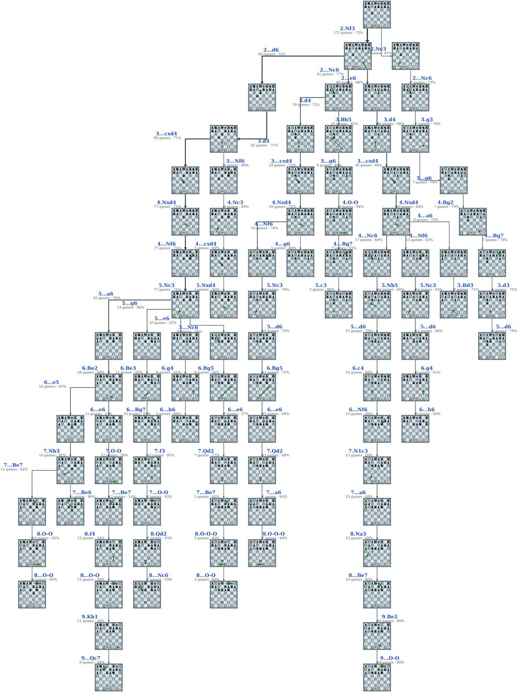

Karpov with White · 1.e4
1.e4 c5
Mostly Sicilian Defense (186)

Open the zoomable tree →Click any move to see the position on the board. Use ← → to step through a game, Home / End to jump, [ and ] for the previous or next game, F to flip the board.